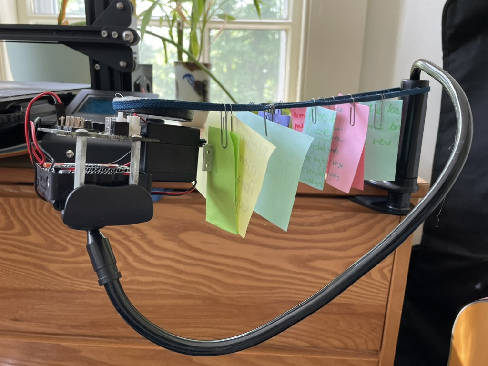

clothesline
Tianyi Evans Gu (b. 2006), 2025
Motorized plastic, post-it notes, shoelace, selfie stick
I grew up with a clothesline in my backyard. On it hung clothes and blankets and memories too. In my mind, I keep this clothesline full with memorable moments. Many of these are first times, like the first time I walked on two legs (albeit wobbly and ready to fall at any moment), the first time I cracked open a novel, or the first time I stepped foot onto Andover's campus. There are also things that have, in all likelihood, happened for the last time, like being carried in my dad's arms from the car to my house under the lamplight (I am too big to fit in his arms now), procrastinating writing an English essay for Andover (I have no more essays to write), or laughing together in the dorm with all my friends deep into the night. This clothesline is disorganized, the varied items billowing wildly in the wind, but I feel pride knowing it is mine.
For the longest time, I thought that in order to be worth remembering, a memory had to be something special, that it had to shout greatness. That if not for some grand occasion (like a first or a last of a lifetime), there wasn't too much lost in leaving it out. Recently, I have been thinking back on my clothesline, thumbing through the items waving in the wind. I've found that oftentimes what has caught my eye has been the quieter moments, the middle moments, the quiet, breathing pauses between the plot points of life. A clothesline is not complete without the simple — these are the moments I will miss the most. Things need not always be once-in-a-lifetime to be worth hanging up. Life is stitched together in these moments of the beautiful ordinary.
Try it yourself (3 min):
Retitle the sculpture and add to the hanging post-it notes something of your own. A dream? A memory? An aspiration? A secret? This is our clothesline of memories, hang something up.